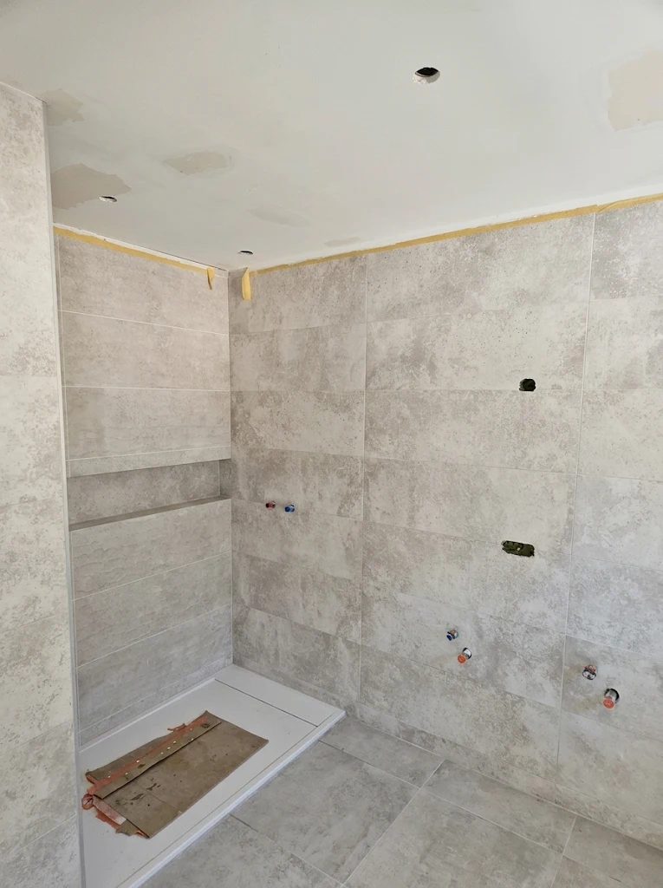
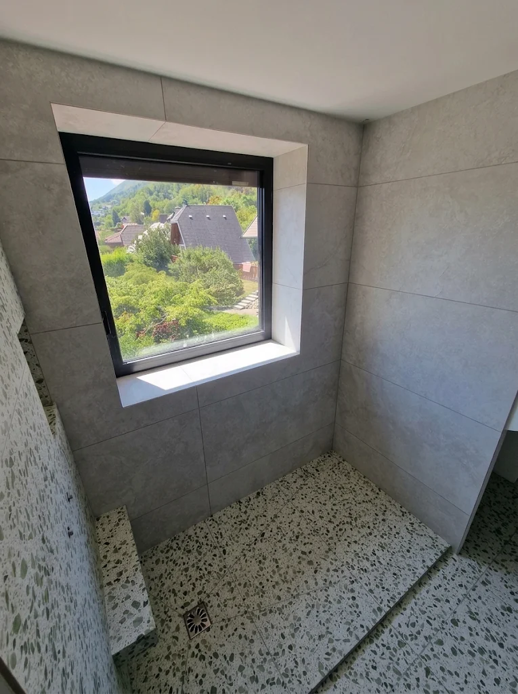
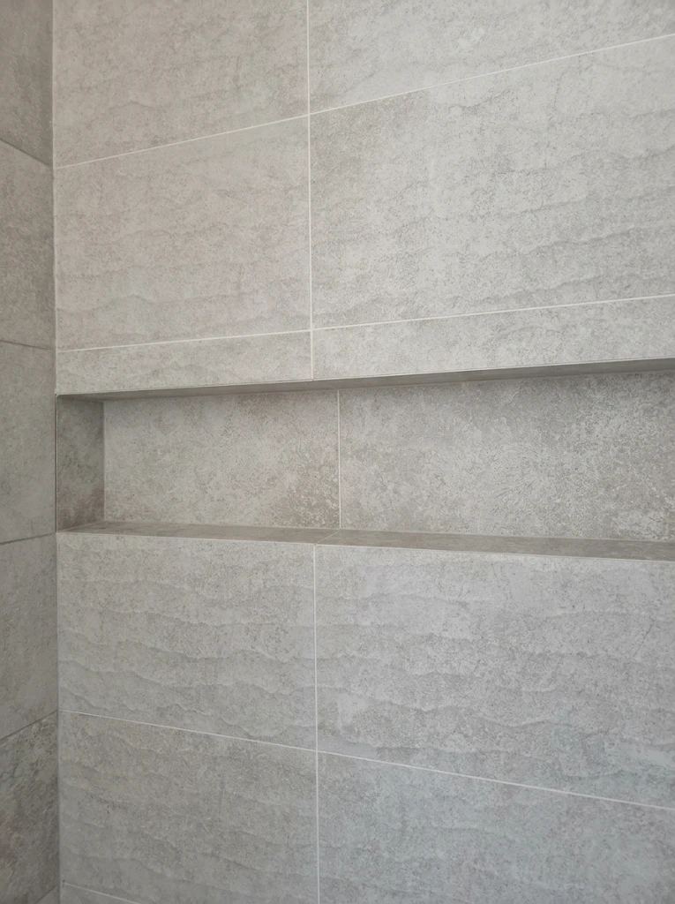
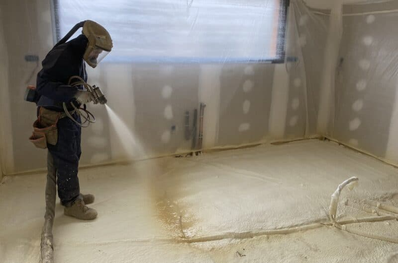
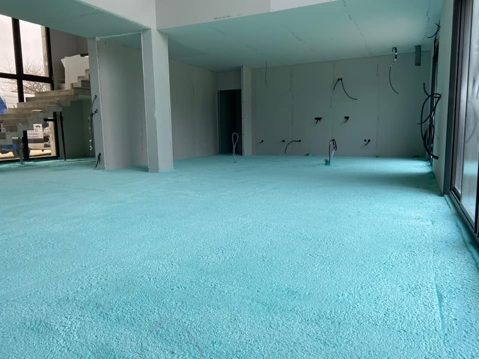
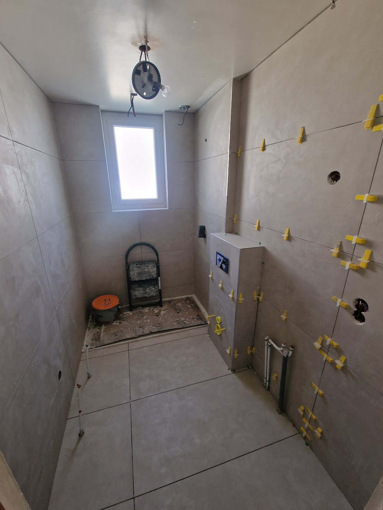

ALBUMS DE CHANTIERS PAR SPÉCIALITÉ
Nos Réalisations
Découvrez nos réalisations en Savoie, Haute-Savoie et Isère (rayon 150 km autour de Bassens et Chambéry) : salles de bain avec coupes à 45°, douches à l'italienne, chapes liquides, mousse projetée et terrasses.
ALBUM 01 • FINITIONS SUR MESURE
Voir la page dédiée →
Salles de Bain & Coupes à 45° (Onglets)

Fenêtre, Banquette & Terrazzo
COUPE À 45°
Fenêtre, Banquette & Terrazzo

Effet Pierre & Niche Intégrée
SUR MESURE
Effet Pierre & Niche Intégrée

Encadrement Fenêtre 45°
COUPE À 45°
Encadrement Fenêtre Bassens

Baignoire & Niche Murale
COUPE À 45°
Baignoire & Niche Murale
ALBUM 02 • ESPACES D'EAU & PRÉCISION
Finitions Artisanales • 73000
Douches à l'Italienne, Niches & Détails d'Onglets

Douche Italienne & Caniveau
DOUCHE ITALIENNE
Caniveau Linéaire & Niche 45°

Niche de Douche Effet Pierre
NICHE SUR MESURE
Grès Cérame Effet Pierre

Détail Onglet Poli à 45°
PRÉCISION ARTISANALE
Détail Onglet Coupe à 45°
ALBUM 03 • ISOLATION & PLANCHER CHAUFFANT
Voir la page dédiée →
Chape Liquide & Mousse Polyuréthane Projetée

ISOLATION THERMIQUE
Mousse Polyuréthane Projetée

RAVOIRAGE ISOLANT
Préparation Mousse Haute Densité

PLANCHER CHAUFFANT
Coulage Chape Liquide Fluide

PLANÉITÉ PARFAITE
Chape Lisse Prête à Carreler
TRANSFORMATIONS COMPLÈTES
Avant / Après Chantier
De la démolition et de l'étanchéité technique jusqu'aux finitions millimétrées : visualisez la métamorphose de nos chantiers.
01 • Rénovation complète salle de bain — Grès cérame effet marbre
AVANT • DÉMOLITION & PRÉPARATION

APRÈS • EFFET MARBRE SOIGNÉ

02 • Terrasse extérieure — Dalle béton brute vers carrelage R11 avec découpe arrondie
AVANT • DALLE BÉTON & PRIMAIRE

APRÈS • TERRASSE EXTÉRIEURE FINIE

03 • Étanchéité sous carrelage (SPEC) & habillage bâti-support WC
AVANT • ÉTANCHÉITÉ SPEC & BÂTI

APRÈS • POSE MILLIMÉTRÉE

VOIR +150 PHOTOS DE CHANTIERS SUR GOOGLE MAPS
Galerie complète vérifiée sur notre fiche établissement Google Maps